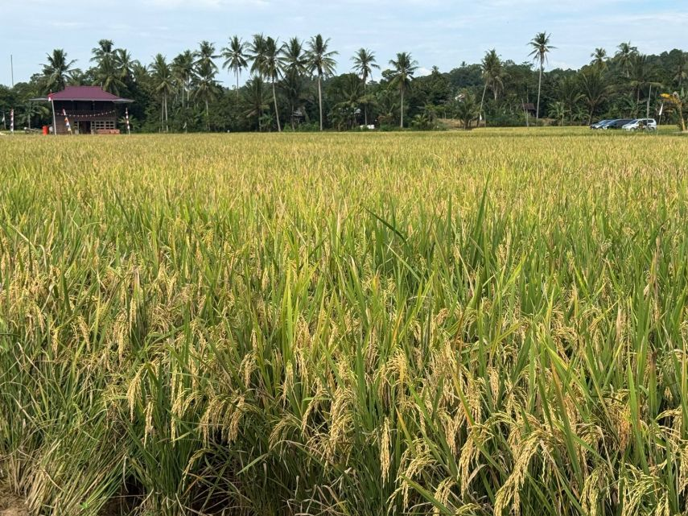
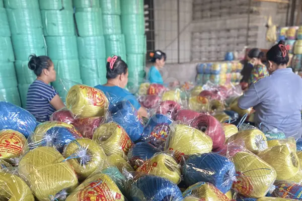

Desa Pondok memiliki berbagai potensi yang dapat mendukung pembangunan ekonomi masyarakat, mulai dari sektor pertanian, UMKM, peternakan, hingga wisata desa.
Produksi padi, jagung dan palawija menjadi sektor unggulan masyarakat.
Industri rumahan dan usaha mikro berkembang cukup pesat.
Peternakan sapi, kambing dan ayam menjadi sumber ekonomi warga.
Budidaya ikan lele dan nila berkembang di beberapa dusun.
Potensi wisata edukasi dan wisata alam desa.
SDM produktif dan aktif dalam kegiatan sosial kemasyarakatan.

Sebagian besar wilayah Desa Pondok merupakan lahan pertanian produktif dengan hasil utama berupa padi.
Berbagai produk UMKM lokal seperti makanan ringan dan pembuatan tali rafia terus berkembang.

Lahan Pertanian
UMKM Aktif
Penduduk
Ternak